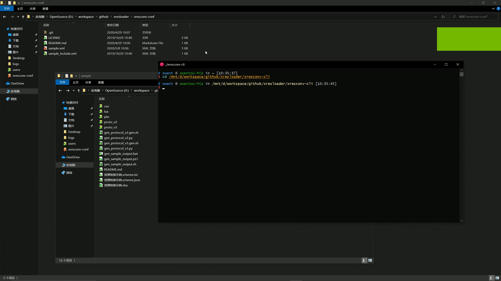
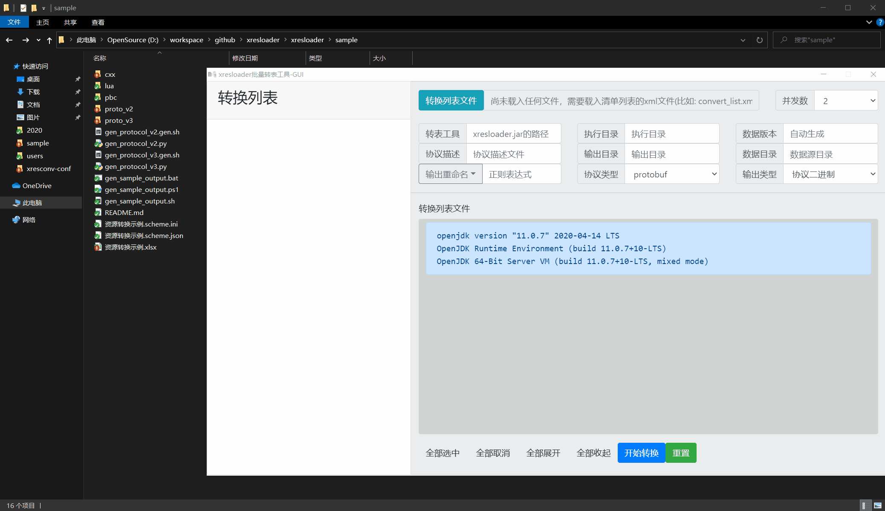

快速上手
Step-1: 下载转表工具
下载JRE/JDK 11或以上(推荐下载64位的: Adoptium OpenJDK/LibericaJDK/OpenJDK/Zulu)
打开 下载工具集 。下载最新版本的 转表工具-xresloader (xresloader-*.jar)。
下载或自己编译protobuf官方的protoc工具，可以去 https://github.com/google/protobuf/releases 下载预编译好的protoc
[可选/推荐] 如果要使用命令行版本的批量转换工具则要额外下载 命令行批量转表工具-xresconv-cli
[可选/推荐] 如果要使用GUI版本的批量转换工具则要额外下载 GUI批量转表工具-xresconv-gui
Step-2: 配置结构化的protobuf协议并使用protoc
我们需要先写协议描述文件，到时候转出的数据也是按这个结构打包的。比如： kind.proto
syntax = "proto3";
import "xresloader.proto";
// xresloader的发布页面 https://github.com/xresloader/xresloader/releases 下载
// protocols.zip ，即可获取xresloader.proto
enum cost_type {
EN_CT_UNKNOWN = 0;
EN_CT_MONEY = 10001 [ (org.xresloader.enum_alias) = "金币" ];
EN_CT_DIAMOND = 10101 [ (org.xresloader.enum_alias) = "钻石" ];
}
message role_upgrade_cfg {
uint32 Id = 1;
uint32 Level = 2;
uint32 CostType = 3 [
(org.xresloader.validator) =
"cost_type", // 这里等同于在Excel中使用 @cost_type 标识
(org.xresloader.field_description) = "Refer to cost_type"
];
int32 CostValue = 4;
int32 ScoreAdd = 5;
}
proto v2也可以，可以参见 https://github.com/xresloader/xresloader/blob/main/sample/proto_v2/kind.proto 。
然后使用protoc生成描述文件和用于加载的代码文件:
protoc -o sample-conf/kind.pb --cpp_out sample-code -I sample-conf -I <xresloader协议目录>/extensions/v3 -I <xresloader协议目录>/extensions sample-conf/kind.proto <xresloader协议目录>/extensions/google/protobuf/descriptor.proto <xresloader协议目录>/extensions/v3/xresloader.proto <xresloader协议目录>/extensions/v3/xresloader_ue.proto
这是最终的 数据转出目标 。
Step-3: 配置Excel数据源
按照协议的配置编辑Excel文件，role_tables.xlsx ，我们使用表名 upgrade_10001 。
第一行设为描述，第二行设置为字段映射列，后面是数据(具体设置请参照 Step-4: 配置批量转表配置文件)。
角色ID |
等级 |
货币类别 |
消耗值 |
|---|---|---|---|
Id |
Level |
CostType |
CostValue |
10001 |
1 |
||
10001 |
2 |
1001 |
50 |
10001 |
3 |
1001 |
100 |
10001 |
4 |
1001 |
150 |
10001 |
5 |
1001 |
200 |
10001 |
6 |
1001 |
250 |
10001 |
7 |
1001 |
300 |
10001 |
8 |
1001 |
350 |
10001 |
9 |
1001 |
400 |
10001 |
10 |
1001 |
450 |
10001 |
11 |
1001 |
500 |
这是最终的 数据来源 。
Step-4: 配置批量转表配置文件
编辑配置转表配置， sample.xml 。这个文件用于告诉批量转表工具，xresloader的位置、工作目录从哪里读协议描述文件，如果映射字段转成什么类型等等。 简而言之就是把 数据转出目标 和 数据来源 关联起来。
<?xml version="1.0" encoding="UTF-8"?>
<root>
<global>
<work_dir desc="工作目录，相对于当前xml的目录，我们的Excel文件放在这里">.</work_dir>
<xresloader_path desc="指向前面下载的 转表工具-xresloader，相对于当前xml的目录">../xresloader/target/xresloader-2.9.0.jar</xresloader_path>
<proto desc="协议类型，-p选项">protobuf</proto>
<output_type desc="输出类型，对应-t选项，输出二进制">bin</output_type>
<output_type desc="多种输出时可以额外定义某个节点的重命名规则" rename="/(?i)\.bin$/\.json/">json</output_type>
<proto_file desc="协议描述文件，-f选项">kind.pb</proto_file>
<output_dir desc="输出目录，-o选项">../sample-data</output_dir>
<data_src_dir desc="数据源目录，-d选项"></data_src_dir>
<java_option desc="java选项-最大内存限制2GB">-Xmx2048m</java_option>
<java_option desc="java选项-客户端模式">-client</java_option>
<default_scheme name="KeyRow" desc="默认scheme模式参数-Key行号，对应上面Id、Level、CostType、CostValue那一行">2</default_scheme>
<option desc="全局自定义选项" name="美化文本输出，缩进为2个空格">--pretty 2</option>
</global>
<groups desc="分组信息（可选）">
<group id="client" name="客户端"></group>
<group id="server" name="服务器"></group>
</groups>
<category desc="类信息（用于GUI工具的树形结构分类显示）">
<tree id="all_cats" name="大分类">
<tree id="kind" name="角色配置"></tree>
</tree>
</category>
<list>
<item name="升级表" cat="kind" class="client server">
<scheme name="DataSource" desc="数据源(文件名|表名|数据起始行号,数据起始列号)">role_tables.xlsx|upgrade_10001|3,1</scheme>
<scheme name="ProtoName" desc="协议名">role_upgrade_cfg</scheme>
<scheme name="OutputFile" desc="输出文件名">role_upgrade_cfg.bin</scheme>
</item>
</list>
</root>
对于文件路径配置的说明: work_dir 、 xresloader_path 和 include 配置的路径是相对于xml文件的路径。其他的涉及路径配置的地方如果不是绝对路径的，都是相对于 work_dir 的路径。（具体含义请参考 批量转表工具 ）
在查找Excel文件的时候，如果有配置 data_src_dir ，则会相对于这个配置的路径读取Excel，否则也是相对于 work_dir 。
Step-5: 运行转表工具
下面两种运行转表的工具，一种是命令行工具，另一种是有用户界面的GUI工具。选用一种即可。
我们假设执行环境的目录结构如下:
sample-conf (批量转表配置所在目录)
sample.xml
kind.proto
kind.pb （使用protoc生成的二进制协议描述文件）
role_tables.xlsx （Excel数据源）
xresloader.run.log (输出的日志文件，执行转表后自动生成，方便万一有错误排查)
sample-data (转出的配置数据所在目录)
role_upgrade_cfg.bin (输出的二进制配置文件，执行转表后自动生成)
xresloader
header (可在 https://github.com/xresloader/xresloader/releases 下载 protocols.zip 获得)
pb_header.proto （用于proto v2的转表头结构描述文件，读取数据的时候用）
pb_header_v3.proto （用于proto v3的转表头结构描述文件，读取数据的时候用）
target (可在 https://github.com/xresloader/xresloader/releases 下载 xresloader-\*.jar 获得)
xresloader-2.8.0.jar
xresconv-cli (命令行转表工具所在目录，可在 https://github.com/xresloader/xresconv-cli/releases 下载 )
xresconv-cli.py
print_color.py
xresconv-gui (GUI转表工具所在目录，可在 https://github.com/xresloader/xresconv-gui/releases 下载 )
GUI工具的文件列表...
Step-5.1: 命令行批量转表工具
python xresconv-cli/xresconv-cli.py sample-conf/sample.xml
输出如下:

Step-5.2: GUI批量转表工具
使用GUI工具，直接加载配置文件，选中要转换的表然后点击开始即可。

Step-6: 加载数据
执行完上面一步的转表流程后，我们得到了 xresloader/sample/role_upgrade_cfg.bin 这个二进制配置文件，接下来把它加载到我们的程序中就可以了。
比如我们用C++来加载。首先我们之前执行 protoc 的时候已经生成了配置协议的代码，然后还需要生成转表工具header的结构的代码。
protoc -I xresloader/third_party/xresloader-protocol/core/ --cpp_out=sample-code xresloader/third_party/xresloader-protocol/core/pb_header_v3.proto ;
然后你可以选择使用我们封装过的读取库解析或手动解析。
Step-6.1: （推荐）使用 xres-code-generator 生成解析代码(C++/Lua/C#/Upb Lua//UE蓝图)
对于C++、Lua和C#，我们推荐使用 xres-code-generator 生成解析代码。（未来会开发更多的语言支持）。详见： 使用 xres-code-generator 生成解析代码 。
Step-6.2: 手动解析
手动解析的流程是先用 xresloader中header 里的 xresloader_datablocks 解析二进制文件，然后用协议的proto解析里面每条 data_block 字段。
每个 data_block 的条目对应配置里协议的每个message。（文件名: load_custom.cpp ）：
#include <cstdio>
#include <iostream>
#include <fstream>
#include <google/protobuf/stubs/common.h>
#if GOOGLE_PROTOBUF_VERSION < 3000000
#include "pb_header.pb.h"
#else
#include "pb_header_v3.pb.h"
#endif
#include "kind.pb.h"
int main(int argc, char* argv[]) {
const char* file_path = "../sample-data/role_upgrade_cfg.bin";
if (argc > 1) {
file_path = argv[1];
} else {
printf("usage: %s <path to role_upgrade_cfg.bin>\n", argv[0]);
return 1;
}
org::xresloader::pb::xresloader_datablocks data_wrapper;
std::fstream fin;
fin.open(file_path, std::ios::in | std::ios::binary);
if (!fin.is_open()) {
printf("open %s failed\n", file_path);
return 1;
}
if (false == data_wrapper.ParseFromIstream(&fin)) {
printf("parse org::xresloader::pb::xresloader_datablocks failed. %s\n", data_wrapper.InitializationErrorString().c_str());
return 1;
}
printf("========================\ndata header: %s\n========================\n", data_wrapper.header().DebugString().c_str());
for (int i = 0; i < data_wrapper.data_block_size(); ++i) {
role_upgrade_cfg role_upg_data;
if (false == role_upg_data.ParseFromString(data_wrapper.data_block(i))) {
printf("parse role_upgrade_cfg for index %d failed. %s\n", i, role_upg_data.InitializationErrorString().c_str());
continue;
}
printf("role_upgrade_cfg => index %d: %s\n", i, role_upg_data.ShortDebugString().c_str());
}
return 0;
}
编译和运行：
g++ -I . -I<protobuf的include目录> -L<protobuf的lib目录> -std=c++11 -O0 -g -ggdb -Wall load_custom.cpp *.pb.cc -lprotobuf -o load_custom.exe && ./load_custom.exe ../sample-data/role_upgrade_cfg.bin
输出示例：
========================
data header: xres_ver: "1.4.3"
data_ver: "1.4.3.20180317040504"
count: 11
hash_code: "md5:7bbe88cca1eb23ebdce75b0e10b88b4a"
========================
role_upgrade_cfg => index 0: Id: 10001 Level: 1
role_upgrade_cfg => index 1: Id: 10001 Level: 2 CostType: 1001 CostValue: 50
role_upgrade_cfg => index 2: Id: 10001 Level: 3 CostType: 1001 CostValue: 100
role_upgrade_cfg => index 3: Id: 10001 Level: 4 CostType: 1001 CostValue: 150
role_upgrade_cfg => index 4: Id: 10001 Level: 5 CostType: 1001 CostValue: 200
role_upgrade_cfg => index 5: Id: 10001 Level: 6 CostType: 1001 CostValue: 250
role_upgrade_cfg => index 6: Id: 10001 Level: 7 CostType: 1001 CostValue: 300
role_upgrade_cfg => index 7: Id: 10001 Level: 8 CostType: 1001 CostValue: 350
role_upgrade_cfg => index 8: Id: 10001 Level: 9 CostType: 1001 CostValue: 400
role_upgrade_cfg => index 9: Id: 10001 Level: 10 CostType: 1001 CostValue: 450
role_upgrade_cfg => index 10: Id: 10001 Level: 11 CostType: 1001 CostValue: 500
加载数据可以有多种方法，这里提供加载二进制的方法。 更多关于输出类型和加载方式的信息请参见 数据输出和数据加载 。
Step-6.3: （老式接口，不推荐，请考虑使用上面6.1的加载方法）使用读取库模板解析
需要先下载读取库。
curl -L -k https://raw.githubusercontent.com/xresloader/xresloader/main/loader-binding/cxx/libresloader.h -o libresloader.h
然后读取的代码sample如下（文件名: load_with_libresloader.cpp ）
#include <cstdio>
#include <iostream>
#include <fstream>
#include "kind.pb.h"
#include "libresloader.h"
int main(int argc, char* argv[]) {
const char* file_path = "../sample-data/role_upgrade_cfg.bin";
if (argc > 1) {
file_path = argv[1];
} else {
printf("usage: %s <path to role_upgrade_cfg.bin>\n", argv[0]);
return 1;
}
// key - value 型数据读取机制
do {
typedef xresloader::conf_manager_kv<role_upgrade_cfg, uint32_t, uint32_t> kind_upg_cfg_t;
kind_upg_cfg_t upg_mgr;
upg_mgr.set_key_handle([](kind_upg_cfg_t::value_type p) {
return kind_upg_cfg_t::key_type(p->id(), p->level());
});
upg_mgr.load_file(file_path);
kind_upg_cfg_t::value_type data1 = upg_mgr.get(10001, 4); // 获取Key 为 10001,4的条目
if (NULL == data1) {
std::cerr<< "role_upgrade_cfg id: 10001, level: 4 not found, load file "<< file_path<< " failed."<< std::endl;
break;
}
printf("%s\n", data1->DebugString().c_str());
} while(false);
// key - list 型数据读取机制
do {
typedef xresloader::conf_manager_kl<role_upgrade_cfg, uint32_t> kind_upg_cfg_t;
kind_upg_cfg_t upg_mgr;
upg_mgr.set_key_handle([](kind_upg_cfg_t::value_type p) {
return kind_upg_cfg_t::key_type(p->id());
});
upg_mgr.load_file(file_path);
printf("role_upgrade_cfg with id=%d has %llu items\n", 10001, static_cast<unsigned long long>(upg_mgr.get_list(10001)->size()));
kind_upg_cfg_t::value_type data1 = upg_mgr.get(10001, 0); // 获取Key 为 10001 下标为0（就是第一个）条目
if (NULL == data1) {
std::cerr<< "role_upgrade_cfg id: 10001 , index: 0, not found, load file "<< file_path<< " failed."<< std::endl;
break;
}
printf("%s\n", data1->DebugString().c_str());
} while(false);
return 0;
}
编译和运行：
g++ -I . -I<protobuf的include目录> -L<protobuf的lib目录> -std=c++11 -O0 -g -ggdb -Wall load_with_libresloader.cpp *.pb.cc -lprotobuf -o load_with_libresloader.exe && ./load_with_libresloader.exe ../sample-data/role_upgrade_cfg.bin
输出示例：
Id: 10001
Level: 4
CostType: 1001
CostValue: 150
role_upgrade_cfg with id=10001 has 11 items
Id: 10001
Level: 1
上面的例程和配置可以在 https://github.com/xresloader/xresloader-docs/tree/main/source/sample/quick_start 查看。
使用proto v2加载二进制数据的特别注意事项
需要额外注意一点的是，如果使用proto v2生成的代码或pb加载转出的数据，如果有 repeated 的数字字段，需要在proto文件里显式指明 packed 属性。